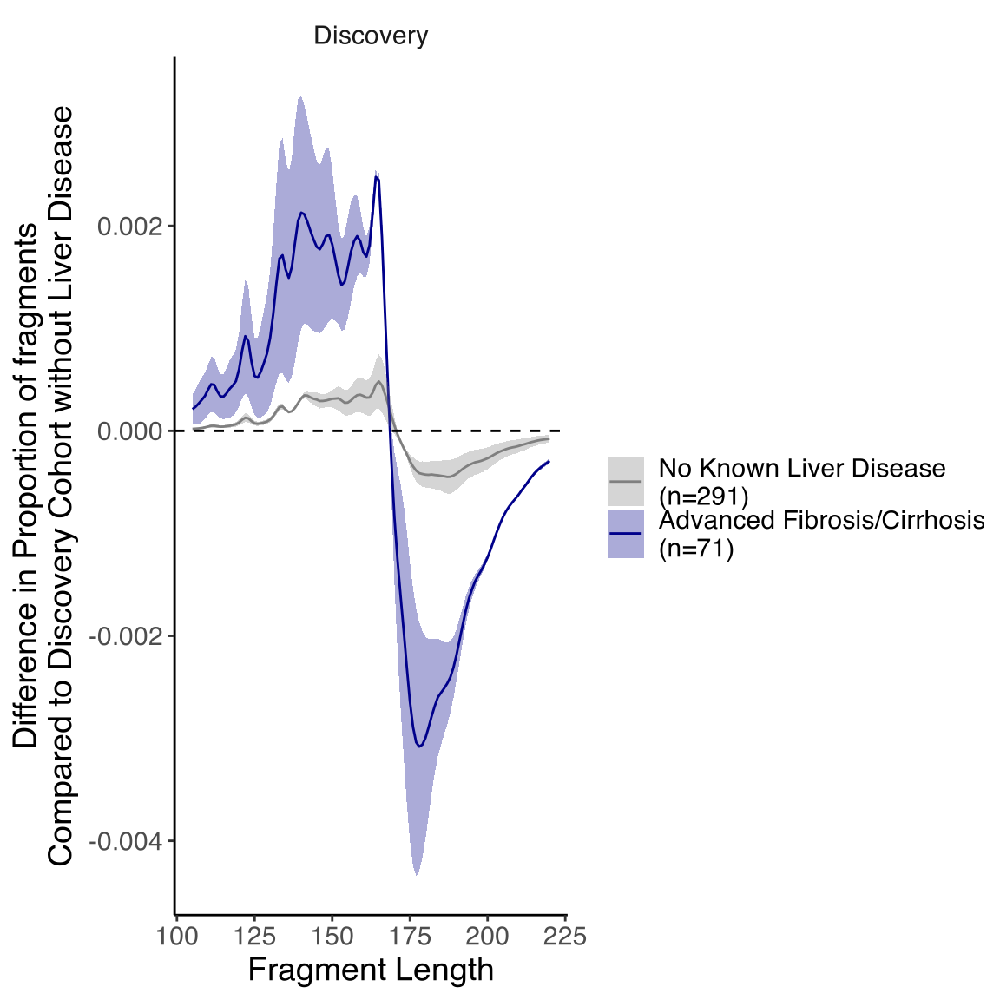
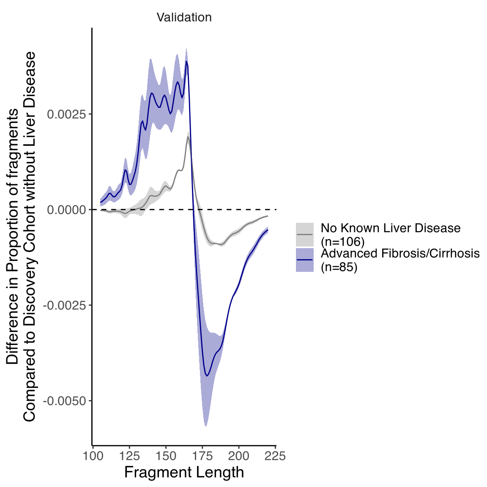
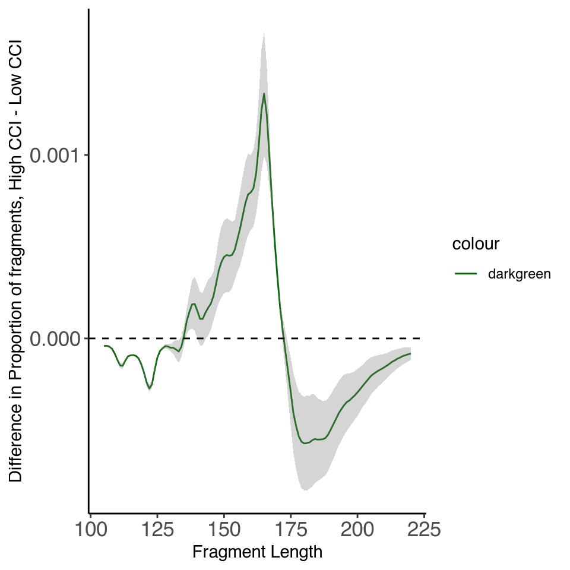
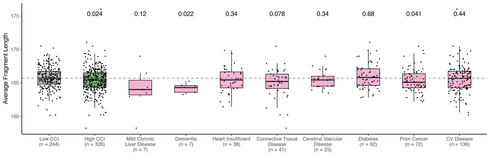

Last updated: 2026-01-11
Checks: 6 1
Knit directory: Annapragada2025/
This reproducible R Markdown analysis was created with workflowr (version 1.7.1). The Checks tab describes the reproducibility checks that were applied when the results were created. The Past versions tab lists the development history.
The R Markdown file has unstaged changes. To know which version of
the R Markdown file created these results, you’ll want to first commit
it to the Git repo. If you’re still working on the analysis, you can
ignore this warning. When you’re finished, you can run
wflow_publish to commit the R Markdown file and build the
HTML.
Great job! The global environment was empty. Objects defined in the global environment can affect the analysis in your R Markdown file in unknown ways. For reproduciblity it’s best to always run the code in an empty environment.
The command set.seed(20251119) was run prior to running
the code in the R Markdown file. Setting a seed ensures that any results
that rely on randomness, e.g. subsampling or permutations, are
reproducible.
Great job! Recording the operating system, R version, and package versions is critical for reproducibility.
Nice! There were no cached chunks for this analysis, so you can be confident that you successfully produced the results during this run.
Great job! Using relative paths to the files within your workflowr project makes it easier to run your code on other machines.
Great! You are using Git for version control. Tracking code development and connecting the code version to the results is critical for reproducibility.
The results in this page were generated with repository version 1073f80. See the Past versions tab to see a history of the changes made to the R Markdown and HTML files.
Note that you need to be careful to ensure that all relevant files for
the analysis have been committed to Git prior to generating the results
(you can use wflow_publish or
wflow_git_commit). workflowr only checks the R Markdown
file, but you know if there are other scripts or data files that it
depends on. Below is the status of the Git repository when the results
were generated:
Ignored files:
Ignored: .DS_Store
Ignored: analysis/.Rhistory
Ignored: data/.DS_Store
Ignored: output/useful.stuff.aa/raw-data/
Untracked files:
Untracked: data/MICA_variable_bins.csv
Unstaged changes:
Modified: analysis/Fig2A_6A_S_5A_21.Rmd
Modified: analysis/Fig5_A.Rmd
Modified: analysis/Fig5_B.Rmd
Modified: analysis/Fig6_B.Rmd
Modified: data/circos_fragmentation.csv
Deleted: data/longbins_mica_processed.csv
Modified: output/cohort_create.r
Note that any generated files, e.g. HTML, png, CSS, etc., are not included in this status report because it is ok for generated content to have uncommitted changes.
These are the previous versions of the repository in which changes were
made to the R Markdown (analysis/Fig2A_6A_S_5A_21.Rmd) and
HTML (docs/Fig2A_6A_S_5A_21.html) files. If you’ve
configured a remote Git repository (see ?wflow_git_remote),
click on the hyperlinks in the table below to view the files as they
were in that past version.
| File | Version | Author | Date | Message |
|---|---|---|---|---|
| html | 1073f80 | shay-279 | 2026-01-09 | re-ran just for fun before zenodo upload |
| Rmd | ad5f281 | shay-279 | 2025-11-19 | push stuff |
| html | ad5f281 | shay-279 | 2025-11-19 | push stuff |
`summarise()` has grouped output by 'type', 'width'. You can override using the
`.groups` argument.
`summarise()` has grouped output by 'type', 'width'. You can override using the
`.groups` argument.
`summarise()` has grouped output by 'type'. You can override using the
`.groups` argument.
| Version | Author | Date |
|---|---|---|
| ad5f281 | shay-279 | 2025-11-19 |

| Version | Author | Date |
|---|---|---|
| ad5f281 | shay-279 | 2025-11-19 |
# A tibble: 348 × 9
type width training mean_diff low_diff high_diff n type2 set
<chr> <int> <chr> <dbl> <dbl> <dbl> <dbl> <fct> <fct>
1 Advanced Fibro… 164 Validat… 0.00388 0.00349 0.00426 85 "Adv… Vali…
2 Advanced Fibro… 165 Validat… 0.00376 0.00355 0.00396 85 "Adv… Vali…
3 Advanced Fibro… 163 Validat… 0.00344 0.00299 0.00389 85 "Adv… Vali…
4 Advanced Fibro… 158 Validat… 0.00334 0.00261 0.00408 85 "Adv… Vali…
5 Advanced Fibro… 159 Validat… 0.00326 0.00263 0.00390 85 "Adv… Vali…
6 Advanced Fibro… 157 Validat… 0.00325 0.00248 0.00403 85 "Adv… Vali…
7 Advanced Fibro… 160 Validat… 0.00306 0.00252 0.00359 85 "Adv… Vali…
8 Advanced Fibro… 156 Validat… 0.00306 0.00229 0.00383 85 "Adv… Vali…
9 Advanced Fibro… 140 Validat… 0.00305 0.00215 0.00394 85 "Adv… Vali…
10 Advanced Fibro… 162 Validat… 0.00303 0.00259 0.00348 85 "Adv… Vali…
# ℹ 338 more rows# A tibble: 348 × 9
type width training mean_diff low_diff high_diff n type2 set
<chr> <int> <chr> <dbl> <dbl> <dbl> <dbl> <fct> <fct>
1 Advanced Fibro… 178 Validat… -0.00435 -0.00565 -0.00306 85 "Adv… Vali…
2 Advanced Fibro… 179 Validat… -0.00432 -0.00548 -0.00315 85 "Adv… Vali…
3 Advanced Fibro… 177 Validat… -0.00428 -0.00568 -0.00289 85 "Adv… Vali…
4 Advanced Fibro… 180 Validat… -0.00423 -0.00525 -0.00320 85 "Adv… Vali…
5 Advanced Fibro… 181 Validat… -0.00411 -0.00499 -0.00323 85 "Adv… Vali…
6 Advanced Fibro… 176 Validat… -0.00408 -0.00553 -0.00262 85 "Adv… Vali…
7 Advanced Fibro… 182 Validat… -0.00397 -0.00473 -0.00322 85 "Adv… Vali…
8 Advanced Fibro… 183 Validat… -0.00386 -0.00450 -0.00322 85 "Adv… Vali…
9 Advanced Fibro… 184 Validat… -0.00378 -0.00432 -0.00323 85 "Adv… Vali…
10 Advanced Fibro… 185 Validat… -0.00373 -0.00420 -0.00326 85 "Adv… Vali…
# ℹ 338 more rows
Wilcoxon rank sum test with continuity correction
data: perc by type
W = 15198, p-value = 7.444e-10
alternative hypothesis: true location shift is not equal to 0
Wilcoxon rank sum test with continuity correction
data: perc by type
W = 3763, p-value < 2.2e-16
alternative hypothesis: true location shift is not equal to 0New names:
Rows: 66120 Columns: 5
── Column specification
──────────────────────────────────────────────────────── Delimiter: "," chr
(2): set, id dbl (3): ...1, width, count
ℹ Use `spec()` to retrieve the full column specification for this data. ℹ
Specify the column types or set `show_col_types = FALSE` to quiet this message.
`summarise()` has grouped output by 'type'. You can override using the
`.groups` argument.
• `` -> `...1`# A tibble: 1 × 4
width mean_diff high_diff low_diff
<dbl> <dbl> <dbl> <dbl>
1 165 0.00133 0.00167 0.000996# A tibble: 1 × 4
width mean_diff high_diff low_diff
<dbl> <dbl> <dbl> <dbl>
1 180 -0.000573 -0.000318 -0.000827
Wilcoxon rank sum test with continuity correction
data: perc by type
W = 26796, p-value = 2.567e-11
alternative hypothesis: true location shift is not equal to 0
Wilcoxon rank sum test with continuity correction
data: perc by type
W = 48518, p-value = 6.949e-06
alternative hypothesis: true location shift is not equal to 0Warning: `show.legend` must be a logical vector.
| Version | Author | Date |
|---|---|---|
| ad5f281 | shay-279 | 2025-11-19 |
`summarise()` has grouped output by 'id'. You can override using the `.groups`
argument.
Adding missing grouping variables: `id`
| Version | Author | Date |
|---|---|---|
| ad5f281 | shay-279 | 2025-11-19 |
sessionInfo()R version 4.4.1 (2024-06-14)
Platform: aarch64-apple-darwin20
Running under: macOS 15.6
Matrix products: default
BLAS: /Library/Frameworks/R.framework/Versions/4.4-arm64/Resources/lib/libRblas.0.dylib
LAPACK: /Library/Frameworks/R.framework/Versions/4.4-arm64/Resources/lib/libRlapack.dylib; LAPACK version 3.12.0
locale:
[1] en_US.UTF-8/en_US.UTF-8/en_US.UTF-8/C/en_US.UTF-8/en_US.UTF-8
time zone: America/New_York
tzcode source: internal
attached base packages:
[1] grid stats graphics grDevices utils datasets methods
[8] base
other attached packages:
[1] ggpubr_0.6.0 readxl_1.4.5 here_1.0.1 devtools_2.4.5
[5] usethis_3.1.0 cowplot_1.1.3 data.table_1.17.0 fs_1.6.5
[9] lubridate_1.9.4 forcats_1.0.0 stringr_1.5.1 dplyr_1.1.4
[13] purrr_1.0.4 readr_2.1.5 tidyr_1.3.1 tibble_3.2.1
[17] tidyverse_2.0.0 magrittr_2.0.3 ggplot2_3.5.1 workflowr_1.7.1
loaded via a namespace (and not attached):
[1] tidyselect_1.2.1 farver_2.1.2 fastmap_1.2.0 promises_1.3.2
[5] digest_0.6.37 timechange_0.3.0 mime_0.12 lifecycle_1.0.4
[9] ellipsis_0.3.2 processx_3.8.6 compiler_4.4.1 rlang_1.1.5
[13] sass_0.4.9 tools_4.4.1 utf8_1.2.4 yaml_2.3.10
[17] knitr_1.49 ggsignif_0.6.4 labeling_0.4.3 htmlwidgets_1.6.4
[21] bit_4.6.0 pkgbuild_1.4.6 pkgload_1.4.0 abind_1.4-8
[25] miniUI_0.1.1.1 withr_3.0.2 urlchecker_1.0.1 git2r_0.35.0
[29] profvis_0.4.0 xtable_1.8-4 colorspace_2.1-1 scales_1.3.0
[33] cli_3.6.4 crayon_1.5.3 rmarkdown_2.29 generics_0.1.3
[37] remotes_2.5.0 rstudioapi_0.17.1 httr_1.4.7 tzdb_0.4.0
[41] sessioninfo_1.2.3 cachem_1.1.0 parallel_4.4.1 cellranger_1.1.0
[45] vctrs_0.6.5 jsonlite_1.9.1 carData_3.0-5 car_3.1-3
[49] callr_3.7.6 hms_1.1.3 bit64_4.6.0-1 rstatix_0.7.2
[53] Formula_1.2-5 jquerylib_0.1.4 glue_1.8.0 ps_1.9.0
[57] stringi_1.8.4 gtable_0.3.6 later_1.4.1 munsell_0.5.1
[61] pillar_1.10.1 htmltools_0.5.8.1 R6_2.6.1 rprojroot_2.0.4
[65] vroom_1.6.5 evaluate_1.0.3 shiny_1.10.0 backports_1.5.0
[69] memoise_2.0.1 broom_1.0.7 httpuv_1.6.15 bslib_0.9.0
[73] Rcpp_1.0.14 whisker_0.4.1 xfun_0.51 getPass_0.2-4
[77] pkgconfig_2.0.3